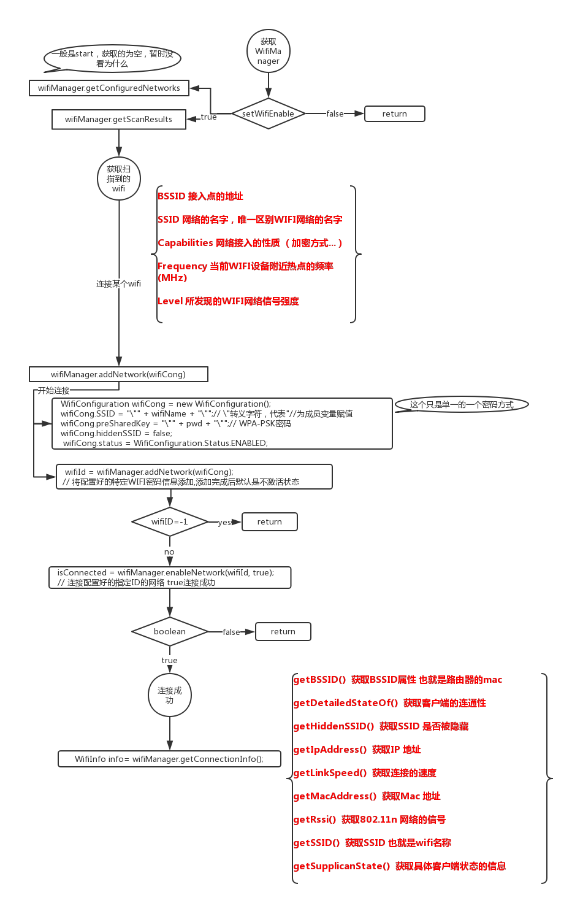

Wii一般连接操作
WifiManager
- addNetwork(WifiConfiguration config) 添加一个config描述的WIFI网络，默认情况下，这个WIFI网络是DISABLE状态的。
- calculateSignalLevel(int rssi , int numLevels) 计算信号的等级
- compareSignalLevel(int rssiA, int rssiB) 对比网络A和网络B的信号强度
- createWifiLock(int lockType, String tag) 创建一个WIFI 锁，锁定当前的WIFI连接
- disableNetwork(int netId) 让一个网络连接失效
- disconnect() 断开当前的WIFI连接
- enableNetwork(int netId, Boolean disableOthers) 连接netId所指的WIFI网络，并是其他的网络都被禁用
- getConfiguredNetworks() 获取网络连接的状态
- getConnectionInfo() 获取当前连接的信息
- getDhcpInfo() 获取DHCP 的信息
- getScanResulats() 获取扫描测试的结果
- getWifiState() 获取当前WIFI设备的状态
- isWifiEnabled() 判断WIFI设备是否打开
- pingSupplicant() ping操作，和PC的ping操作相同作用
- ressociate() 重新连接WIFI网络，即使该网络是已经被连接上的
- reconnect() 重新连接一个未连接上的WIFI网络
- removeNetwork() 移除某一个网络
- saveConfiguration() 保留一个配置信息
- setWifiEnabled() 让一个连接有效
- getScanResults() 开始扫描
- updateNetwork(WifiConfiguration config) 更新一个网络连接


Demo传送门
- Demo还有些bug，连接之后，状态没有变，然后再次关闭开启SwitchButton,没有执行到getScanResults方法
- 所以上面的 getConfiguredNetworks 没有获取到数据可能有问题，下次再核实一下。
- 本文链接：https://www.wl960127.top/posts/54963/
- 版权声明：本站内容均为个人学习笔记,不涉及商业用途，仅提供学习参考,第三方摘录已署名链接,未署名请评论添加,转载署名来源即可。
分享